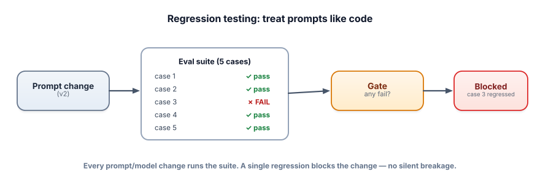

Regression-testing prompts
A small prompt change that fixes one case can quietly break others.
A regression test checks that something that used to work still works.
Wire your golden set into a test suite that runs on every change, like the tests for normal code.
A gate is the rule that decides if the change may ship, such as “no case may get worse”.
Because answers can vary from run to run, important cases are often run more than once.
A regression test suite is like the safety checklist a pilot runs before every flight, even on a plane that flew fine yesterday. Each line on the list exists because something once went wrong. If any line fails, the plane does not leave.
| In the picture | In the real system |
|---|---|
| The pilot's checklist before every flight | The eval suite run on every change (CI, continuous integration) |
| Each line exists because something once went wrong | Each case added after a real failure |
| Any failed line keeps the plane on the ground | The gate blocks the merge on a regression |
| Checking twice when an instrument flickers | Running a case 3 times and deciding on the majority |
Where the picture breaks. The plane's checks give the same result every time, but an LLM can pass a check on one run and fail it on the next, so for LLMs you sometimes run a check more than once and decide on the majority.
Going deeper
A “tiny” prompt tweak to fix one case can silently break five others — and you won’t notice until a user does. The fix is to treat prompts like code: a test suite that runs on every change and blocks regressions. This is where evals become a habit, not an afterthought.
Why prompts need tests like code does
Prompts, models, RAG settings, and fine-tunes are all changeable behavior that can regress. Unlike code, the failures are often invisible: the change still runs, it just answers worse on cases you didn’t check. A regression test is an eval case that must keep passing; a suite of them, run automatically on every change and used to block bad changes, is exactly continuous integration (CI) — applied to your LLM system. It converts “I hope I didn’t break anything” into a green or red check.

A regression test verifies that a previously-correct behavior still works after a change. An eval suite is your golden set wired up to run automatically and report pass/fail. A gate is the rule that decides whether a change can ship (e.g., “no case may regress” or “overall score must not drop”). Prompt versioning means treating each prompt as a versioned artifact you can compare and roll back, just like code.
Run the gate
Your baseline (v1) passes 4 of 5 cases. Try a good candidate and a risky one, and watch the gate decide.
Prompt CI gate
Wire your golden set into plain assertions. Run it in CI; a regression fails the build, exactly like a broken unit test.
# test_prompts.py — run with: pytest (free)
import pytest
from my_system import answer # the current prompt/pipeline
GOLDEN = [
("What's the refund window?", "30 days"),
("How do I reset my password?", "Settings"),
("Do you ship to Antarctica?", "don't know"), # must abstain
]
@pytest.mark.parametrize("query, must_include", GOLDEN)
def test_golden(query, must_include):
out = answer(query, temperature=0) # temp 0 → deterministic, non-flaky
assert must_include.lower() in out.lower(), f"Regressed on: {query}"
# For fuzzy quality, assert on an LLM-judge score threshold instead of a keyword:
# assert judge(query, reference, out)["score"] >= 4Now a prompt change that breaks the “abstain” case turns the build red with “Regressed on: Do you ship to Antarctica?” — caught in CI, before any user sees it. Two tricks keep LLM tests stable: use temperature 0 where the API still accepts it (Anthropic’s API version 2026-10-21 rejects temperature with a 400, so there you rely on robust assertions and repeated runs) and assert on structure/keywords or judge thresholds, not exact wording.
Assumptions: a 600-case suite, of which 150 are critical (safety, refusals, key facts). Each case runs 3 times because outputs vary between runs. Generator and judge are claude-sonnet-5-5 at $2 in / $10 out per million tokens (Claude models overview). Anthropic's API version 2026-10-21 rejects temperature settings (migration guide), so repeated runs, not temperature 0, are how you handle variance there.
- Calls per full run. 600 x 3 = 1,800 generations and 1,800 judge calls.
- Generation cost. About 2,000 input and 400 output tokens each: 3.6 M x $2 = $7.20, plus 0.72 M x $10 = $7.20.
- Judge cost. About 2,500 input and 100 output tokens each: 4.5 M x $2 = $9.00, plus 0.18 M x $10 = $1.80.
- Total per full run. $7.20 + $7.20 + $9.00 + $1.80 = $25.20. At 30 PRs a week that is $756 a week.
- Tier it. Run only the 150 critical cases on every PR: a quarter of the calls, about $6.30 per PR, or $189 a week. Run the full 600 nightly on main: 7 x $25.20 = $176 a week. New total about $365 a week, and the Batch API's 50% discount can roughly halve the nightly part.
- Gate rules. A critical case passes if it passes at least 2 of 3 runs; any critical failure blocks the merge. Non-critical cases: the overall pass rate may not drop more than 1 point against main, measured in the same run.
- Flake budget. Track cases whose result differs across the 3 runs. If one case flips on more than 20% of runs over a week, its check is too strict or the prompt is unstable; fix it rather than retrying CI.
- Prompts/models/RAG are changeable behavior that silently regresses — test them like code.
- An eval suite run in CI turns your golden set into a pass/fail gate on every change.
- Define the gate explicitly: no case may regress, or overall score must not drop.
- Keep LLM tests non-flaky with temperature 0 and structural / judge-threshold assertions (not exact strings).
- Version prompts so you can compare and roll back.
Your prompt regression tests fail intermittently — sometimes green, sometimes red, with no code change. What’s the most likely cause and fix?
Prompt v2 scores 75% vs v1's 78% overall, yet you block the merge. Why?
Your CI eval uses an LLM judge, and last week someone upgraded the judge model. Today a PR fails the gate with lower scores on cases nobody touched. What do you check first?
1. Write a gating rule for a change that improves 8 cases but regresses 1 critical safety case. Should it ship?
2. Why assert on keywords/structure or a judge threshold instead of exact output strings?
3. Your team ships prompt changes by editing them directly in production. List two problems and the fix.
▸ Show solutions & reasoning
1. It should not ship as-is. A sensible gate: overall score may improve, but no critical case (safety, abstention, correctness on key facts) may regress — those are hard blocks. Net improvement doesn’t justify a safety regression. Mark critical cases specially and require them to always pass; the candidate must fix the safety case first.
2. Because LLM outputs have many valid phrasings — exact-match would fail correct answers that are worded differently, making tests brittle and flaky. Asserting that the answer contains the key fact, matches the required structure, or clears an LLM-judge quality threshold checks what actually matters while tolerating harmless variation. You’re testing meaning/correctness, not stenography.
3. Problems: no way to know if a change regressed other cases (no eval gate), and no way to roll back or audit what changed (no versioning). Fixes: store prompts as versioned artifacts in source control, and run the eval suite as a CI gate before any prompt reaches production — so changes are reviewed, tested, and revertible like any code.
The endgame is that evaluating an LLM change feels as routine as running tests on code. Concretely: prompts live in version control; a change opens a pull request; CI runs the eval suite (keyword/structural checks for closed outputs, LLM-judge thresholds for fuzzy quality) against the golden set; the result posts as a check with per-category scores and any regressions highlighted; the gate blocks merges that regress critical cases or drop the overall score. Reviewers see “quality 0.91 → 0.94, no regressions” instead of arguing about a few cherry-picked examples. This is how fast-moving teams ship LLM changes daily without breaking things.
Two pragmatic notes. First, balance strictness vs. friction: gate hard on critical/safety cases and overall score, but allow small movement on individual fuzzy cases so the suite isn’t paralyzingly flaky — and invest in determinism (temp 0, robust assertions) so the signal is trustworthy. Second, the suite must keep growing: every production incident becomes a new permanent test, so the same bug can never ship twice.
Combined with tracing (which supplies the failures) and online eval (which validates real impact), regression testing closes the loop — your golden set, your CI gate, and your production observability together form a system where quality only ratchets upward. That ratchet, more than any single technique, is what “shipping reliable LLM products” actually means.
You’ve built the full evaluation toolkit — the skill that quietly underlies every other track. Time to pressure-test it. On to the Track 6 interview check.
labs/06_evals.pyFree and offline once set up: Ollama with qwen2.5:7b, plus the packages in labs/README.md. From the course folder:
python labs/06_evals.pyWhat to look for: The last part of the gate compares two prompt versions per case and prints every case where v2 lost correctness or citations. On our run v2 lost citations on almost every case while correctness barely moved, and the gate blocked it. Make the candidate prompt break one more case on purpose and confirm the gate fails even though the average barely moves.
Small samples: these labs use 5 to 20 cases so they run in minutes on a laptop. Where they report a rate, they print n and a 95% Wilson interval. Read them as a demonstration of the mechanism, not as a measured rate for your system; for that you need hundreds of cases and several seeds.
▸ Recorded output (our run, 2026-11-03, qwen2.5:7b on a laptop GPU)
5) Judge position bias: same pair, swapped order
How long do card refunds take? order1 picked B, order2 picked B -> FLIPPED
Return window for electronics? order1 picked B, order2 picked A -> consistent
Express shipping price? order1 picked B, order2 picked A -> consistent
When is standard shipping free? order1 picked A, order2 picked B -> consistent
Duplicate charge reversal time? order1 picked A, order2 picked B -> consistent
consistent verdicts: 4/5 = 80% (95% CI 38%-96%) correct in both orders: 2/5 = 40% (95% CI 12%-77%)
n=5 pairs is a demo, not a measurement of this judge's bias: the intervals span most of 0-100%.
Look: with no reference passage in the judge prompt, the judge has to guess which number is right.
Always judge both orders and count a win only when both agree; give the judge the reference.
6) How wide is the error bar on 12 cases?
v1 accuracy 11/12 = 92% (95% CI 65%-99%) (Wilson interval)
At n=400 the same accuracy would be roughly +/- 2.7%
{"v1_correct": 0.917, "regressions": 12, "judge_consistent": 4}Your numbers will differ a little run to run. Full log: labs/outputs. Source: labs/06_evals.py.
Warm-up. A critical case passes with probability 0.9 on any single run. With a '2 of 3 runs' rule, what is the chance it passes the gate?
▸ Solution
P(at least 2 of 3) = P(3) + P(exactly 2) = 0.9^3 + 3 x 0.9^2 x 0.1 = 0.729 + 0.243 = 0.972. So a case that flakes 10% of the time on a single run blocks a PR only about 2.8% of the time, while a case that has truly broken (say 0.3 pass rate) passes the gate only 0.027 + 3 x 0.09 x 0.7 = 0.216, about 22% of the time. Majority voting separates flakes from real breaks much better than one run.
Transfer. Your prompts live in a database and product managers edit them live. Propose a minimal change that brings them under regression testing without blocking PMs.
▸ Solution
Keep the editing UI, but make it write a new version row with a content hash instead of overwriting. A webhook on save runs the critical suite against the new version and shows pass or fail in the UI within a few minutes. Production reads a 'released' pointer, not the latest version, and the pointer moves only when the suite passes, with an override that needs a second person. Every version stays available for rollback by moving the pointer back. PMs keep their speed; the system gains versions, tests and an audit trail.
Stretch. Write a pytest-style test for a JSON extraction prompt that is stable even though outputs vary between runs. Explain each assertion.
▸ Solution
@pytest.mark.parametrize("email, expected", GOLDEN)
def test_extract(email, expected):
runs = [extract(email) for _ in range(3)]
ok = 0
for out in runs:
data = Invoice.model_validate_json(out) # schema must parse
if (data.invoice_id == expected["invoice_id"]
and abs(data.total - expected["total"]) < 0.01
and data.currency in {"INR", "USD", "EUR"}):
ok += 1
assert ok >= 2, f"{email[:40]}: {ok}/3 runs correct"Junior How do you regression-test a prompt?
▸ Model answer
Treat it like code. Keep the prompt in version control. Keep a golden set of inputs with checks: exact values for closed fields, must-include facts, schema validation, or an LLM-judge score threshold for open text. Run the suite in CI on every change and block the merge if any critical case fails or the overall score drops against the main branch. Avoid exact-string assertions on free text, because valid answers vary in wording. Add every production bug as a new permanent test so it cannot come back.
Mid Your prompt test suite is flaky. How do you make it trustworthy?
▸ Model answer
First find the source. If the API still allows it, use deterministic decoding settings, but many current APIs, including Anthropic's latest version, no longer accept temperature, so plan for variance anyway. Replace exact-match asserts with structural checks and must-include facts. Run critical cases several times and decide by majority. Score the baseline and the candidate in the same run with the same judge version. Track flip rates per case; a case that flips often has a vague check or an unstable prompt, and both are bugs to fix. Never 'fix' flakiness by deleting tests or retrying until green.
Senior How would you design release gating for LLM changes across prompts, models and retrieval settings?
▸ Model answer
Version every component that changes behaviour: prompt hash, model ID, retrieval config, index version and judge version, and record them with every eval result. Tier the suites: a fast critical suite on every PR, the full suite nightly, and a locked release suite before promotion. Gate on hard rules (no critical regressions, no safety failures) plus bounded movement on aggregates, with paired comparison against main scored in the same run. Model upgrades from a provider go through the same gate as code. After the offline gate, promotion moves through canary and A/B with guardrails, and incidents feed new tests. Report per-category diffs on the PR so reviewers see what moved.
In one line: Run the same tests on every prompt change and refuse any change that breaks a case that used to pass.